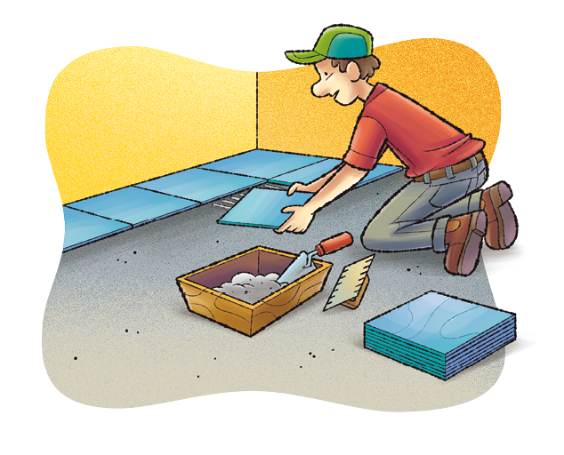
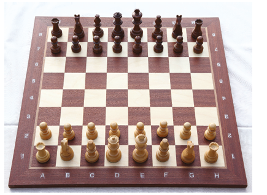
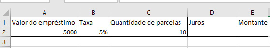
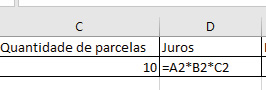
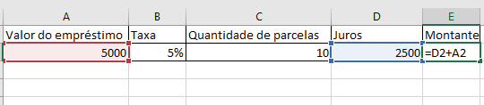
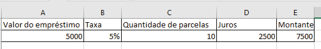
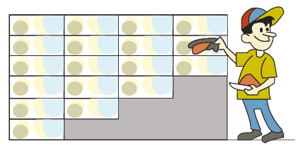

24
CAPÍTULO 3 - Potências e raízes
Potências de base 10
Vamos observar como resolver potências de base 10:

Troque ideias com um colega e respondam, no caderno, às questões a seguir:
- Quando temos uma potência de base 10 em que o expoente é um número inteiro positivo, o que vocês observam no resultado?
- Quando temos uma potência de base 10 em que o expoente é um número inteiro negativo, o que vocês observam na representação em número decimal dessa potência?
- O número 300 pode ser representado por um produto de dois fatores
em que um dos fatores é uma potência de base 10, observem:
Agora, representem os números a seguir na forma de um produto em que um dos fatores é uma potência de base 10.
- 700
- 13 000
- 8 000
- 27 000
- 50 000
- 110 000
- O número 0,02 também pode ser representado por um produto de dois fatores em que um dos fatores é uma potência de base 10, observem:
Agora, representem os números a seguir na forma de um produto em que um dos fatores é uma potência de base 10.
- 0,5
- 0,019
- 0,09
- 0,0045
- 0,003
- 0,0063
25
Notação científica
Imagem digital de glóbulos vermelhos. Imagem não representa o tamanho real.
Um glóbulo vermelho do sangue humano tem aproximadamente 0,000 007 metros de diâmetro.- A massa do Sol é de aproximadamente 1 989 000 000 000 000 000 000 000 000 000 kg.
- Um glóbulo vermelho do sangue humano tem aproximadamente 0,000 007 metros de diâmetro.
Os números que representam a massa do Sol e o diâmetro de um glóbulo vermelho apresentam vários algarismos. Um número é considerado bastante grande e o outro bastante pequeno.
Em muitas situações do cotidiano, não é prático realizar cálculos utilizando números com tantos algarismos, por isso costumamos representá-los em notação científica.
A representação de um número por meio da notação científica é composta pelo produto de dois fatores, sendo o primeiro um número maior ou igual a 1 e menor que 10, e o segundo uma potência de base 10.
Vejamos como podemos representar os números citados em notação científica.
- 1 989 000 000 000 000 000 000 000 000 000 kg
1 989 000 000 000 000 000 000 000 000 000 =
= 1 989 ∙ 1 000 000 000 000 000 000 000 000 000
Podemos transformar o número 1 000 000 000 000 000 000 000 000 000 em uma potência de base 10.
1 000 000 000 000 000 000 000 000 000 = 1027
26
Dessa forma, teremos:
1 989 000 000 000 000 000 000 000 000 000 = 1 989 ∙ 1027
Para termos a representação na forma de notação científica, precisamos transformar ainda o primeiro fator, observe:
1 989 = 1,989 ∙ 10³
Logo,
1 989 000 000 000 000 000 000 000 000 000 = 1,989 ∙ 103 ∙ 1027 = 1,989 ∙ 1030
Assim, 1 989 000 000 000 000 000 000 000 000 000kg equivalem a 1,989 ∙ 10³0kg.
- 0,000 007 m
0,000 007 = 7 ∙ 0,000 001
Temos que
Logo, 0,000 007 = 7 ∙ 10 -6.
Assim, 0,000 007 m equivale a 7 ∙ 10-6 m.
► Encontre soluções
- Escreva, em seu caderno, os números a seguir na forma de uma
potência de base 10.
- 1 000
- 0,01
- 0,0001
- 100
- 10 000
- 0,001
- 0,000001
- 100 000
- Agora, escreva os números abaixo na forma de notação científica.
- 0,006
- 9 000
- 120
- 0,064
- 0,00089
- 1 820 000
- 145 000
- 0,000963
- Leia o texto a seguir:
Cientistas descobrem possível novo planeta “próximo” à Terra
Os astrônomos detectaram evidências de um terceiro planeta orbitando a Proxima Centauri, o vizinho estelar mais próximo do nosso Sol, a 40,2 trilhões de quilômetros de distância.
Um ano-luz, a distância que a luz percorre em um ano no vácuo, é equivalente a cerca de 9,46 trilhões de quilômetros. Com uma massa de cerca de um quarto da massa da Terra, o objeto rochoso é um dos exoplanetas mais leves já encontrados.
STRICKLAND, Ashley. Cientistias descobrem possível novo planeta "próximo" à Terra. CNN Brasil, 11 fev. 2022. Disponível em: https://www.cnnbrasil.com.br/tecnologia/cientistas-descobrem-possivel-novo-planeta-proximo-a-terra/. Acesso em: 19 abr. 2022.
- Represente quantos quilômetros equivale um ano luz na forma de notação científica.
27
Números quadrados perfeitos
- Utilizando uma folha de papel quadriculado e com
base nas informações a seguir, construam três quadrados.
- Para a medida do lado, considerem que cada quadradinho do quadriculado tem 1 unidade de comprimento.
- Construam 3 quadrados, pintando 9 quadradinhos para o primeiro, 16 quadradinhos para o segundo e 25 quadradinhos para o terceiro.
- Tentem montar um quadrado pintando 14 quadradinhos.
- Recortem e colem, no caderno, as figuras construídas.
Agora, respondam:
- Com 9, 14, 16 e 25 quadradinhos, é possível construir quadrados perfeitos?
- Quais são as medidas dos lados e das áreas de cada quadrado construído?
- Por que os números 9, 16 e 25 são chamados de números quadrados perfeitos?
- O número 14 é um número quadrado perfeito? Por quê?
- De 1 a 100, quais números são quadrados perfeitos?
Os números quadrados perfeitos são quadrados de números naturais.
Exemplos:
5² = 25 (25 é um número quadrado perfeito, pois 5 é um número natural).
11² = 121 (121 é um número quadrado perfeito, pois 11 é um número natural).
Raiz quadrada exata
Considere a área deste terreno:

28
Quanto mede o lado do terreno?
Para calcular a medida do lado do terreno, precisamos encontrar a raiz quadrada de 1 764.
Vamos calcular o valor da raiz quadrada de duas maneiras diferentes.
1.ª maneira
Verificar a tabela dos números quadrados perfeitos em que o algarismo das unidades é igual a 0 (zero).
De acordo com a tabela, podemos verificar que 1 764 está entre 1 600 e 2 500.
Como a raiz quadrada de 1 600 é 40 e a de 2 500 é 50, temos que a raiz quadrada de 1 764 é um número entre 40 e 50.
Como possibilidades, temos: 41, 42, 43, 44, 45, 46, 47, 48 e 49.
Observando o último algarismo do número 1 764, vamos verificar quais dessas nove possibilidades, ao serem elevadas ao quadrado, apresentam 4 na ordem das unidades.
Os dois únicos números em que esse fato ocorre são 42 e 48. Agora, vamos verificar qual deles pode ser a raiz quadrada de 1 764.
- 42² = 42 · 42 = 1 764
- 48² = 48 · 48 = 2 304
Portanto, a medida do lado do terreno é igual a 42 metros.
2.ª maneira
Decompor o número 1 764 em fatores primos.
| 1764 | 2 | |
| 882 | 2 | Logo, |
| 441 | 3 | |
| 147 | 3 | |
| 49 | 7 | |
| 7 | 7 | |
| 1 |
Portanto, a medida do lado do terreno é igual a 42 metros.
29
► Encontre soluções
- Calcule o quadrado do número 18 e adicione 37 ao resultado encontrado. O número obtido é um número quadrado perfeito. Qual é a raiz quadrada desse número?
- Verifique quais dos números são quadrados perfeitos. Depois,
calcule a raiz quadrada deles.
- 1 024
- 2 400
- 2 916
- 1 849
- 1 298
- 3 720
- Dos números naturais que estão entre 300 e 400, quais são quadrados perfeitos?
- Um pedreiro vai cobrir o piso de uma cozinha
quadrada de 36 m². Ele tem a opção de colocar lajotas quadradas
com 36 cm ou 40 cm de lado. Qual das duas opções ele deve escolher para que não seja necessário
recortar as lajotas? Quantas lajotas serão usadas para cobrir o piso da cozinha?

- Um terreno quadrado tem 1 156 m2 de área. O proprietário desse terreno deseja cercá-lo com arame farpado, dando 3 voltas completas. Quantos metros de arame farpado ele precisa comprar, considerando a medida do portão que é de 2 m?
- Calcule o valor da raiz quadrada dos seguintes números quadrados
perfeitos no caderno.
- 784
- 1 296
- 1 764
- Num loteamento, há dois terrenos vizinhos iguais. Juntos, eles têm a forma de um retângulo. Cada terreno tem a forma de um quadrado e mede 121 m² de área. Se os dois terrenos forem comprados pela mesma pessoa, quantos metros de muro serão necessários para cercar o novo terreno formado?
- Abaixo, temos a imagem de um tabuleiro de xadrez com 1 024 cm2 de área desconsiderando a borda.

- Calcule a medida do lado do tabuleiro.
- Determine as medidas do lado e da área de cada quadrado que compõe o tabuleiro.
30
Raízes não exatas
Vamos verificar, agora, como calcular o valor aproximado de .
Inicialmente verificaremos se 90 é um número quadrado perfeito.
Vejamos os números quadrados perfeitos até 100.
- 1
- 4
- 9
- 16
- 25
- 36
- 49
- 64
- 81
- 100
A raiz quadrada de 90 não é exata, pois:
81 < 90 < 100 → 9² < 90 < 10²
Como 90 está entre 81 e 100, sua raiz quadrada é um número entre 9 e 10.
Vamos descobrir a raiz quadrada aproximada por tentativas.
- (9,1)² = (9,1) · (9,1) = 82,81
- (9,2)² = (9,2) · (9,2) = 84,64
- (9,3)² = (9,3) · (9,3) = 86,49
- (9,4)² = (9,4) · (9,4) = 88,36
- (9,5)² = (9,5) · (9,5) = 90,25 → mais próximo de 90
Dizemos que a raiz quadrada aproximada de 90, com uma casa decimal, é 9,5.
► Encontre soluções
- Em seu caderno, calcule, com aproximação de uma casa decimal, o
valor de:
- Agora, com aproximação de uma casa decimal, calcule o valor
aproximado de:
31
Potência com expoente fracionário
Estudamos anteriormente como a radiciação e a potenciação estão relacionadas entre si. Agora, vamos estudar as potenciações com expoentes fracionários.
Para isso, observe a seguinte potência:
Aplicando as propriedades da potenciação, temos:
Podemos notar que e vimos anteriormente que .
Logo, .
Agora, considere a potência:
Aplicando as propriedades da potenciação, temos:
Podemos dizer que e . Logo, .
Sendo a um número racional positivo, m inteiro, n natural e n ≥ 2, temos:
► Encontre soluções
- Escreva, em seu caderno, os números a seguir na forma de potência
com expoente fracionário.
- Elabore, em seu caderno, um problema usando a relação entre potenciação e radiciação. Troque seu caderno com um colega, para que um resolva o problema do outro e depois, juntos, avaliem se as resoluções estão corretas.
32
► Probabilidade e estatística
Porcentagem
Estudamos nos anos anteriores que as porcentagens podem ser representadas na forma de frações cujo denominador é igual a 100. Vimos também que a expressão por cento vem do latim per centum, que significa “divisão por 100”. Retomando esse conhecimento, observe a seguinte situação:
Gabriel foi ao banco solicitar um empréstimo. Anteriormente ele fez algumas simulações on-line para negociar com o seu gerente quando chegasse ao banco. Em uma dessas simulações ele emprestaria R$ 5.000,00 com uma taxa de juros de 5% ao mês. Quanto de juros ele pagaria no primeiro mês?
5% de R$ 5000,00 é igual a
.
Assim, a taxa de juros mensal é de R$ 250,00.
Se ele pagar em 10 vezes, considerando a taxa de juros simples, qual será o montante final a ser pago?
Como são 10 meses, o juros a ser pago seria igual a 10 × R$ 250,00 = R$ 2.500,00. Adicionado ao valor do empréstimo, temos:
R$ 5.000,00 + R$ 2.500,00 = R$ 7.500,00.
Ou seja, o valor a ser pago será de R$ 7.500,00.
Agora, vamos fazer esse mesmo cálculo com o auxílio do software LibreOffice:
- Acesse o programa LibreOffice.calc.
- Digite os dados, conforme mostrado a seguir: 
- No campo "juros", digite:  Ou seja, o valor do empréstimo × taxa × quantidade de parcelas = juros a ser pago.
33
- No campo "montante", adicione o juros a ser pago e mais o valor do empréstimo solicitado. 
- Obtemos o seguinte resultado: 
Portanto, o montante a ser pago será de R$ 7.500,00.
- O montante a ser pago por Gabriel será maior ou menor se ele parcelar em 48 vezes?
-
Reúna-se com um colega e criem juntos uma situação-problema, envolvendo o cálculo de porcentagem para que possam resolver com o uso do software LibreOffice. Depois, troquem os cadernos com outra dupla, para que eles resolvam a situação elaborada por vocês e vocês a deles.
► RELEMBRE
- (Saresp) Antônio gasta do seu salário:
para pagar a mensalidade da sua escola,
para condução e
para despesas de casa. A porcentagem que sobra do seu salário é:
- 8%
- 10%
- 20%
- 22%
- Determine o valor da expressão numérica .
- (Saresp) Pedro, o pedreiro, estava azulejando uma parede, quando os azulejos terminaram.
Veja como a parede ficou, antes que Pedro pudesse completar o trabalho.

Para completar esse trabalho com o mesmo tipo de azulejo, Pedro ainda teve que cobrir:
- 50% dessa parede
- 45% dessa parede
- 25% dessa parede
- 20% dessa parede